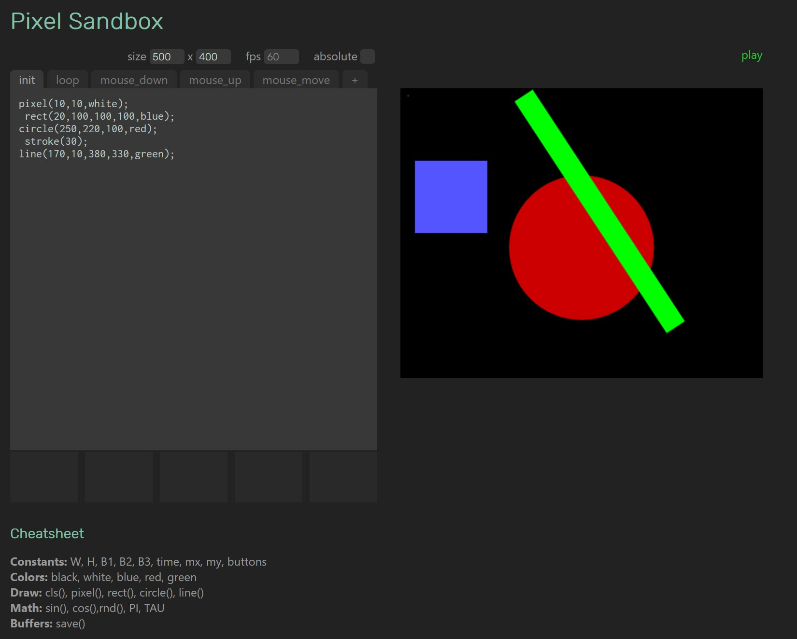

Dec 2, 2023
The idea is to create a 2D/Canvas version of ShaderToy for easy and fast prototyping. A simpler and more approachable p5js with some more extra aids.
For example, one of the things that I wanted to try is to allow clicking in the canvas to adjust the position or creation of the shapes and update the code with that interaction.
Other aids included tabs for each of the event handlers and additional functions, or drag and dropping images in the slots below that you could use in the canvas.
